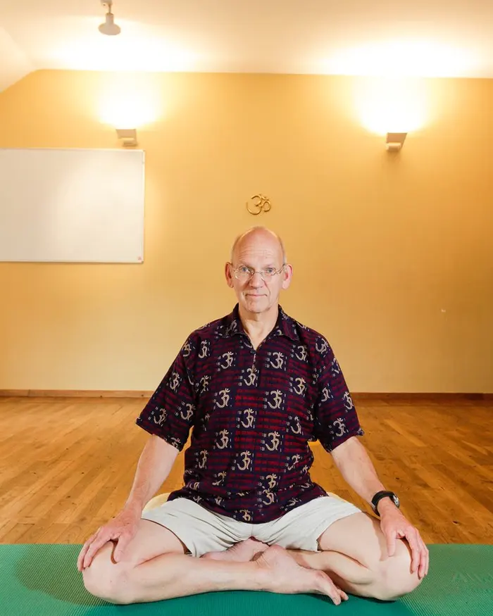

Hatha Yoga · Jodoigne & Bruxelles

Co-fondateur du Centre de Yoga Santosha avec Julie, Thierry enseigne le Hatha Yoga depuis de nombreuses années à Jodoigne et Bruxelles. Sa pédagogie est ancrée dans une vision profonde et poétique du yoga.
"Le yoga est un océan de connaissance, un océan de sagesse. Il ne s'agit pas de s'y noyer, il ne s'agit pas d'en faire le tour mais de nous embarquer sur un voilier et de sentir l'océan, le comprendre en allant chaque fois un peu plus loin en nous et dans l'océan."
Thierry est également formateur de professeurs de yoga et co-anime les formations proposées au centre Santosha.
Chaque jeudi matin, Thierry guide une méditation de 35 minutes, en ligne et en présentiel à Jodoigne. Semaine après semaine, sutra après sutra, il médite sur le Yoga Sutra de Patanjali, le grand texte yogique de méditation. Elle s’adresse aux élèves de Santosha, aux enseignants de yoga et à toute personne qui désire une vie plus harmonieuse et moins stressée.
En ligne et en présentiel.
En ligne : meet.google.com/jnq-vfkx-sme